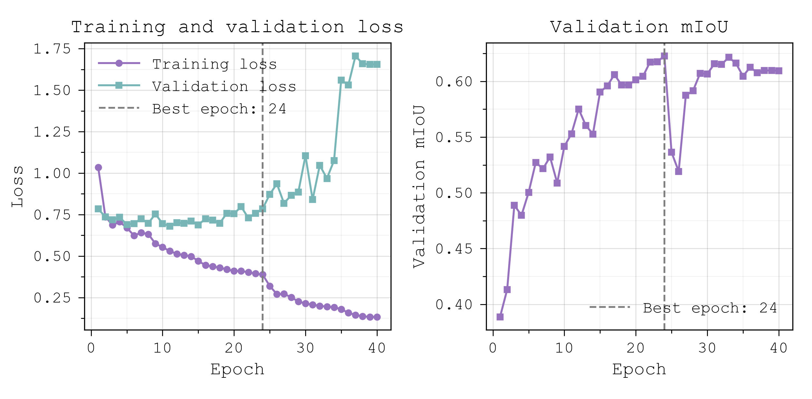
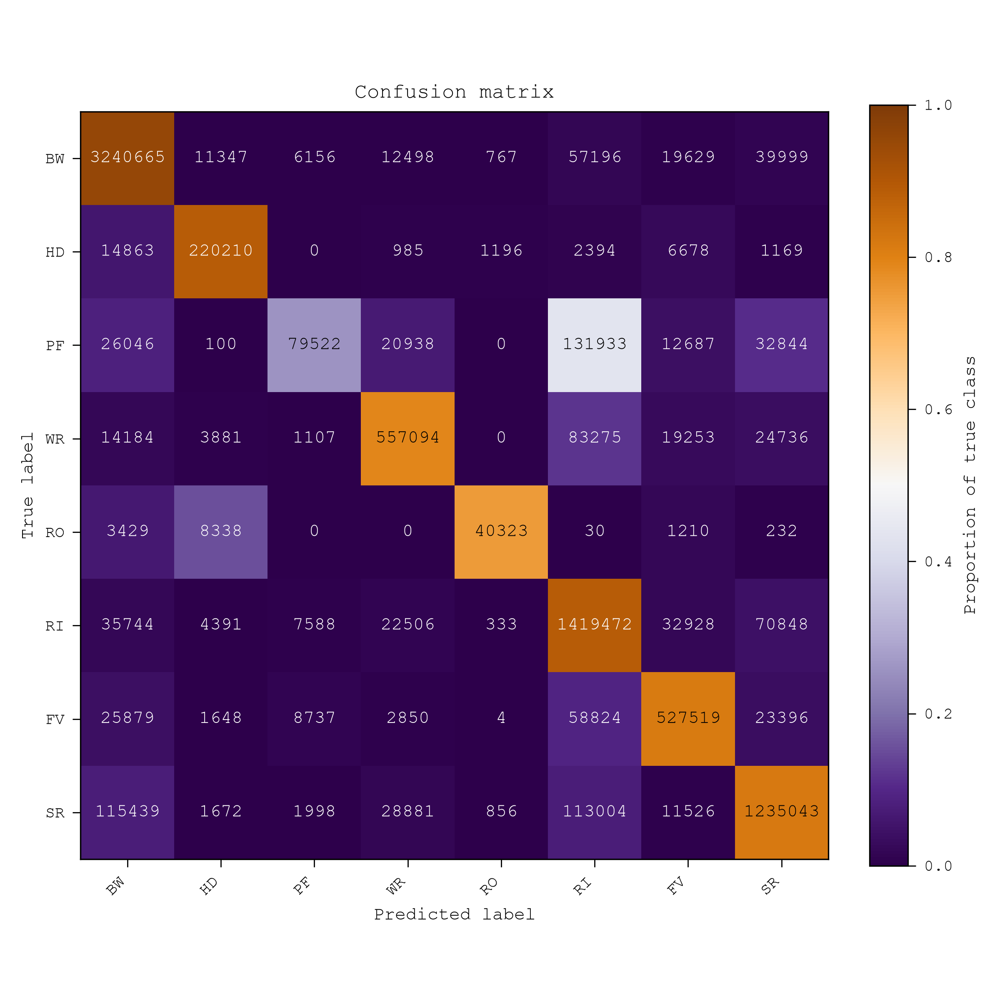

Assignment 2 ·
Underwater segmentation
Deep Learning on Large-Scale Data and Specialized Tasks.
Problem statement
The task is to label each pixel in an underwater photograph as water, a diver, marine life, vegetation, a robot, a wreck, a reef or the sea floor. We compare a model trained from scratch with a pretrained model, focusing on rare classes and object boundaries.
Dataset and EDA
SUIM pairs underwater photographs with colour-coded masks that label every pixel. Its varied scenes and uneven class frequencies let us compare segmentation quality on common and rare objects.
The eight classes are waterbody (BW), divers (HD), plants and sea-grass (PF), wrecks (WR), robots and instruments (RO), reefs and invertebrates (RI), fish and vertebrates (FV), and sea-floor and rocks (SR).
We resize images and masks to 320 × 240 pixels. The model assigns one of the eight classes to each pixel to produce a predicted mask.

Data quality and splits
The archive contains 1,635 image-mask pairs. Every file decodes and every image has a mask. We exclude 85 training-pool pairs whose masks contain colours outside the eight class codes. These include all 37 masks that are taller than their images.

Ten training-pool images duplicate official test images. We remove the training copies and retain all 110 test pairs, leaving 1,540 usable pairs.

The remaining training pool contains 55 duplicate groups covering 115 images. Duplicate groups stay together when we split the pool into training and validation, using seed 42 and each image's rarest class to balance the split. All eight classes appear in both sets.
| Split | Pairs | Use |
|---|---|---|
| Training | 1,143 | Fit model parameters. |
| Validation | 287 | Select checkpoints and compare configurations. |
| Official test | 110 | Reserved for final evaluation. |
We select checkpoints and compare configurations on the 287 validation images. After fixing every configuration, we scored U-Net and the two DeepLabV3 loss variants once on the 110 official test images.
Class balance and image sizes
Reefs occupy 35.64% of usable training-pool pixels, while robots occupy 0.56%. Only 69 training images and 17 validation images contain robots.


The 1,540 usable pairs span 11 image sizes. About 84% are 640 × 480 pixels. Resizing to 320 × 240 reduces detail in small objects and thin boundaries.

Colour and brightness by class
We compare colour and brightness across classes using photograph pixels grouped by their ground-truth labels. The plot uses 287 validation images resized to 240 × 320. Plants and reefs have broadly overlapping distributions, so colour alone may offer limited separation between these classes.

Methodology
We pair each photograph with its mask and resize both to 320 × 240 pixels, using bilinear interpolation for images and nearest-neighbour interpolation for masks. We decode mask colours into class labels and normalize images with ImageNet statistics. During training, we randomly flip each image and its mask together.


Both baseline configurations use cross-entropy over all eight classes. DeepLabV3 fine-tunes the backbone at a base learning rate of 0.0001 and its classifier at 0.001. BatchNorm running statistics remain fixed; its affine parameters and the rest of the network still train. U-Net uses one base learning rate of 0.001.
The checkpoint with the highest validation mIoU supplies the reported metrics. IoU and Dice are computed from confusion counts accumulated over the whole validation split, then averaged equally across all eight classes, including background. The reported convention assigns zero to an absent-class denominator and ignores no labels.
Experimental setup
Both baseline comparison runs use seed 42, the committed data split, 320 × 240 inputs, AdamW with weight decay 0.0001, float32 training, and a 40-epoch budget. The learning-rate schedule uses five warm-up epochs followed by cosine decay. Both accumulate gradients over four minibatches.
| Setting | U-Net | DeepLabV3 |
|---|---|---|
| Run ID | suim_unet_seed42 | suim_ablation_reference_seed42 |
| GPU | RTX 4060 Laptop GPU | RTX 4060 Ti |
| Physical batch per GPU | 4 | 4 |
| Effective batch | 16 | 16 |
| Python | 3.12.3 | 3.11.11 |
| PyTorch / CUDA build | 2.14.0+cu130 / 13.0 | 2.14.0+cu126 / 12.6 |
Experimental design
We run six comparisons. The five DeepLabV3 variants each change one factor of the reference configuration. The U-Net and DeepLabV3 comparison changes architecture, size and initialization together, so it cannot isolate the effect of pretraining. Only the loss comparison carries a hypothesis stated in advance, in our dataset proposal.
| Experiment | Hypothesis or expectation | Changed factor | Decision criterion |
|---|---|---|---|
| Baseline vs. pretrained | DeepLabV3 scores higher, especially on small classes | U-Net from scratch vs. pretrained DeepLabV3 | Gap larger than run-to-run variation; not attributed to pretraining alone |
| Loss function | Dice raises RO, PF and WR IoU without lowering mIoU | Cross-entropy vs. 0.5 cross-entropy + 0.5 soft Dice | Supported only if all three classes improve and mIoU does not fall |
| Backbone freezing | Freezing lowers mIoU, as fixed features cannot adapt to underwater images | Full fine-tuning vs. frozen backbone | Change larger than run-to-run variation |
| Augmentation | Flips give a small gain with 1,143 training images | Random horizontal flips vs. none | Change larger than run-to-run variation |
| Backbone depth | ResNet101 gives a small gain at a higher cost | ResNet50 vs. ResNet101 | Change larger than run-to-run variation |
| Input resolution | A smaller input loses small and thin structures | Full vs. half input size, both scored on the full-size mask grid | Change larger than run-to-run variation |
To judge whether a difference exceeds chance, we compare it with the variation between repeated training runs. The six DeepLabV3 configurations were trained twice with the same code, seed and GPU, and their mIoU differed by up to 0.97 points, most likely because some GPU operations are not deterministic. We report the second set of runs, whose checkpoints and records are complete, and treat smaller differences as indistinguishable.
Experimental Results
| Model | Loss | Best epoch | Val mIoU | Val mean Dice | Test mIoU | Test mean Dice | Params (M) |
|---|---|---|---|---|---|---|---|
| U-Net | CE | 38 | 36.94 | 48.05 | 36.75 | 47.84 | 7.76 |
| DeepLabV3 | CE | 31 | 62.05 | 73.91 | 68.27 | 79.47 | 39.64 |
| DeepLabV3 | CE + Dice | 24 | 62.28 | 74.42 | 69.18 | 80.78 | 39.64 |
On the test split, DeepLabV3 with cross-entropy exceeds the U-Net baseline by 31.52 percentage points in mIoU (25.11 points on validation), while using 5.1 times as many parameters. Each configuration was trained once, but this gap is far larger than the variation between repeated training runs.
The test scores of DeepLabV3 are 6.22 points higher than its validation scores, while those of U-Net differ by only 0.19 points. Two checks suggest a difference between the image sets rather than leakage. Test images are no closer to the training images than validation images are: the median difference-hash distance to the nearest training image is 15 bits for both splits. The median per-image mIoU is also similar, 57.7% on test and 54.4% on validation. Instead, the class mix differs: reefs appear in 53% of test images against 71% of validation images, and sea floor in 55% against 39%. With only 110 test images, comparisons between models on the same images are more informative than the absolute scores.



At epoch 40, U-Net records train/validation cross-entropy of 0.7400/0.7526, and both losses are still falling, so a longer schedule may help. The DeepLabV3 reference ends at 0.0846/0.9841: its validation loss is lowest at epoch 11 and then rises, yet its validation mIoU keeps improving and selects epoch 31. With CE + Dice, validation mIoU peaks at epoch 24 and finishes 1.32 points below that peak.
Class-level comparison
| Class | U-Net (CE) | DeepLabV3 (CE) | DeepLabV3 (CE + Dice) | |||
|---|---|---|---|---|---|---|
| Val | Test | Val | Test | Val | Test | |
| BW: Background waterbody | 80.62 | 84.82 | 83.89 | 89.43 | 83.84 | 90.04 |
| HD: Human divers | 30.83 | 33.75 | 70.32 | 78.96 | 70.17 | 77.09 |
| PF: Plants and sea-grass | 0.00 | 0.05 | 11.94 | 24.12 | 14.87 | 34.78 |
| WR: Wrecks and ruins | 41.16 | 33.30 | 66.88 | 70.32 | 66.42 | 69.53 |
| RO: Robots and instruments | 0.00 | 0.00 | 70.58 | 71.09 | 68.20 | 68.87 |
| RI: Reefs and invertebrates | 67.94 | 54.31 | 75.36 | 69.57 | 75.28 | 69.40 |
| FV: Fish and vertebrates | 33.14 | 31.64 | 66.89 | 70.08 | 67.13 | 70.44 |
| SR: Sea-floor and rocks | 41.85 | 56.12 | 50.56 | 72.58 | 52.30 | 73.30 |
U-Net gets almost no plant or robot pixels right on either split. DeepLabV3 scores higher on every class on both splits and reaches 71.09% robot IoU on test, but plants remain difficult at 24.12%. Aggregate improvement therefore does not imply that every class is well segmented.
Our loss hypothesis was that adding Dice raises the IoU of robots, plants and wrecks without lowering mIoU. On validation, CE + Dice raises plant IoU by 2.93 points but lowers robot IoU by 2.38 and wreck IoU by 0.45, with a 0.23-point mIoU gain. The test split, used only as a check, shows the same pattern: plants +10.66, robots −2.22, wrecks −0.79 and mIoU +0.91. Since not all three classes improve, the hypothesis is not supported, and the overall change is smaller than the variation between repeated runs.
The larger pretrained model performs better in this observed comparison. Architecture and parameter count also change, so the result cannot establish how much improvement is caused by pretraining alone.
Input and output examples
We compare U-Net and the DeepLabV3 reference on the same validation images. Each row shows the input, ground truth, U-Net prediction and DeepLabV3 prediction. We select the highest- and lowest-scoring DeepLabV3 images, plus its highest-scoring robot-containing image, by per-image mIoU. Colours identify SUIM classes.

w_r_148_: DeepLabV3 follows the wreck region closely, while U-Net confuses parts of it with other classes. Vector PDF.
d_r_211_: DeepLabV3 recovers the robot body; U-Net misses the robot class. Vector PDF.
w_r_162_: Both models predict mostly reef where the ground truth contains plants and wrecks. Vector PDF.Controlled experiments
We use DeepLabV3-ResNet50 as the reference and change one factor per run: backbone freezing, horizontal flips, backbone depth, loss or input resolution. All six runs share seed 42, the same data split and 40 training epochs. All six runs use one RTX 4060 Ti with PyTorch 2.14.0 and CUDA 12.6. We use batches of four and accumulate four batches per update, giving an effective batch of 16.
We keep AdamW, weight decay 0.0001, backbone and head learning rates of 0.0001 and 0.001, five warm-up epochs and cosine decay fixed. BatchNorm running statistics also stay fixed. We select each checkpoint by its highest validation mIoU.
Our reference fine-tunes the full pretrained network with horizontal flips, cross-entropy and 320 × 240 inputs. For the half-resolution run, we resize output scores to 320 × 240 before assigning class labels. The combined loss weights cross-entropy and per-image macro soft Dice equally across all eight classes. We calculate differences against this reference, using the same effective batch of 16 throughout.
| Configuration | Change from reference | Best epoch | mIoU (%) | Mean Dice (%) | Δ mIoU (pp) | Boundary mIoU (%) |
|---|---|---|---|---|---|---|
| Reference | Full ResNet50 fine-tuning, flips, CE, 320 × 240 input | 31 | 62.05 | 73.91 | 0.00 | 30.07 |
| Frozen backbone | Freeze the backbone; train the segmentation head | 25 | 54.40 | 67.62 | -7.65 | 25.82 |
| No augmentation | Remove horizontal flips | 23 | 61.70 | 73.75 | -0.35 | 29.27 |
| ResNet101 | Replace ResNet50 with ResNet101 | 28 | 62.12 | 73.82 | +0.07 | 30.70 |
| CE + Dice | Use 0.5 CE + 0.5 soft Dice | 24 | 62.28 | 74.42 | +0.23 | 30.13 |
| Half resolution | Reduce input to 160 × 120 | 27 | 56.29 | 69.32 | -5.76 | 26.52 |


Two factors have a clear effect: fine-tuning the full network and keeping the original input resolution. Halving the input also lowers boundary mIoU from 30.07% to 26.52%. The other three variants change mIoU by at most 0.35 points, no more than the 0.35-point change we observed when retraining the reference with the same seed, so this single-seed study cannot show that flips, a deeper backbone or the Dice term help. We retain the full ResNet50 reference with cross-entropy as the simpler choice among the configurations with similar overall scores.
Error analysis
We most often confuse plants with reefs: DeepLabV3 labels 71.27% of plant pixels as reef. Small objects show a different failure: 11.46% of robot pixels are assigned to divers. The first confusion matrix below covers all 287 validation images.
Both confusions persist on the test split. There the reference assigns 43.39% of plant pixels to reef and 15.57% of robot pixels to divers, so the plant confusion is weaker than on validation but remains the largest error for that class.



Both models struggle at object boundaries. DeepLabV3 reaches 30.07% boundary mIoU against 64.34% in the interior. U-Net drops from 37.88% in the interior to 18.04% at boundaries.

Performance also varies across images. DeepLabV3 has a median per-image mIoU of 54.43%. Per-image scores average over classes present in each image, while the overall metric pools pixels across the split.

We selected the lowest-IoU plant and robot examples to inspect rare-class failures. When scores tie, we choose the largest labelled region, then the filename. Both selected classes have zero IoU.

f_r_1577_, with plants covering 73.2% of the target. Robot failure: d_r_798_, with robots covering 3.9%. Purple marks every incorrectly labelled pixel. These are selected failures, not a random sample. Vector PDF.Compute cost
| Model | Params (M) | GFLOPs | Train time (min) | Latency (ms/image) | Peak memory (GiB) | Training hardware |
|---|---|---|---|---|---|---|
| U-Net | 7.76 | 28.3 | 14.9 | 4.8 | 0.97 | RTX 4060 Laptop |
| DeepLabV3 (CE) | 39.64 | 95.8 | 21.4 | 7.8 | 1.93 | RTX 4060 Ti |
| DeepLabV3 (CE + Dice) | 39.64 | 95.8 | 21.6 | 7.8 | 1.93 | RTX 4060 Ti |
DeepLabV3 uses 5.1 times as many parameters as U-Net and 3.4 times as many floating-point operations per image. Adding Dice leaves the parameter count and inference cost unchanged. We trained U-Net on an RTX 4060 Laptop GPU and DeepLabV3 on an RTX 4060 Ti, so these timings describe the observed cost rather than a hardware-matched speed comparison.
Limitations
We trained each configuration with one seed, so we cannot estimate the spread between seeds. A repeated training run shows that this spread matters: retraining the six DeepLabV3 configurations with the same code, seed and GPU changed mIoU by up to 0.97 points and the IoU of a single class by up to 6.56 points (robots). The loss comparison even changed sign, from −0.13 points in the first run to +0.23 in the second. The U-Net and DeepLabV3 comparison also changes architecture, pretraining and hardware, so we cannot attribute the score difference to pretraining alone or compare their speed directly.
The test scores come from only 110 images whose class mix differs from validation. Only 12 test images contain robots and 20 contain plants, so the test IoU of these classes, including the effect of Dice, rests on few images. Resizing can remove small objects and thin boundaries, and plant segmentation remains weak. Duplicate filtering does not rule out related scenes across splits.
Conclusion
The pretrained DeepLabV3 configuration raises test mIoU from 36.75% to 68.27% and improves every class's IoU over the U-Net baseline on both splits. Adding Dice raises plant IoU but lowers robot and wreck IoU on both validation and test, so the experiment does not support our hypothesis. Together with the other controlled comparisons, these findings support full fine-tuning of ResNet50 with cross-entropy at the original training resolution.
Report, slides and presentation
- Final report: Read PDF · Download PDF
- Presentation slides: View PDF · Download PDF
- YouTube presentation: Watch the group presentation
Evidence and reproduction
We generate the controlled-experiment figures from the comparison CSV and resolved configurations linked below. The error-analysis figures use the saved validation summaries and DeepLabV3 prediction masks.
uv run python -m scripts.plots.plot_segmentation_ablation
uv run python -m scripts.plots.plot_segmentation_errors- Source code: week7 branch
- Dataset proposal: SUIM task, exclusions, splits and experiment plan
- EDA and split files: EDA outputs · Committed train/validation lists
- U-Net run: Training summary and resolved configuration
- DeepLabV3 run: Training summary · Training history · Run configuration
- Installation, training and evaluation: README reproduction commands
- Controlled study: Comparison CSV · Resolved configurations · Figure reproduction command
- Test evaluation: U-Net · DeepLabV3 (CE) · DeepLabV3 (CE + Dice) · One-time test script
- Error analysis: Per-image scores and failure selections
- Final deliverables: report, slides and presentation video. Checkpoint downloads are not yet linked on this page.
Group members
| Full name | Student ID | Assignment 2 responsibility |
|---|---|---|
| Vu Duc Viet Anh | 2352074 | SUIM data loader and augmentation, EDA and assignment page. |
| Tran Lam Anh | 2352067 | Pretrained DeepLabV3 implementation and fine-tuning. |
| Le Nguyen Khang | 2352470 | Segmentation metrics, preliminary evaluation and qualitative examples. |
| Tran Nguyen Giap | 2352284 | U-Net baseline implementation and training. |